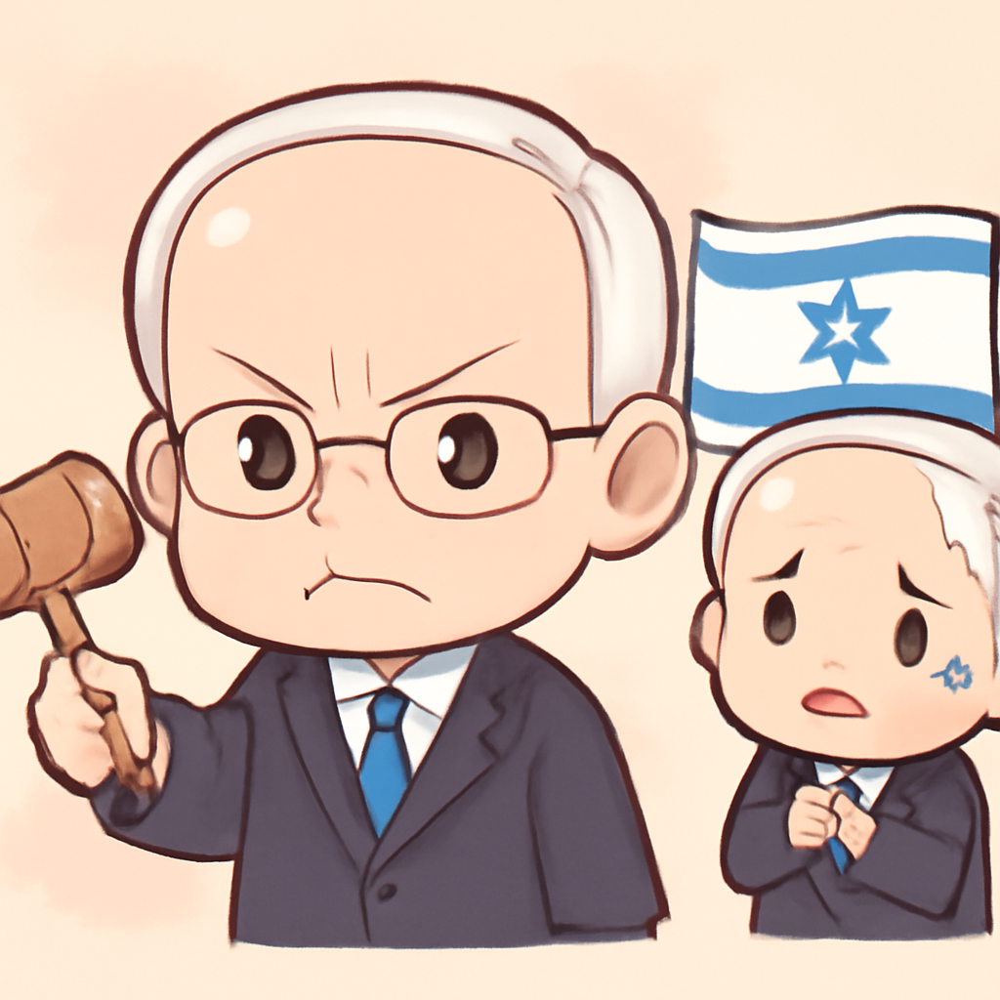
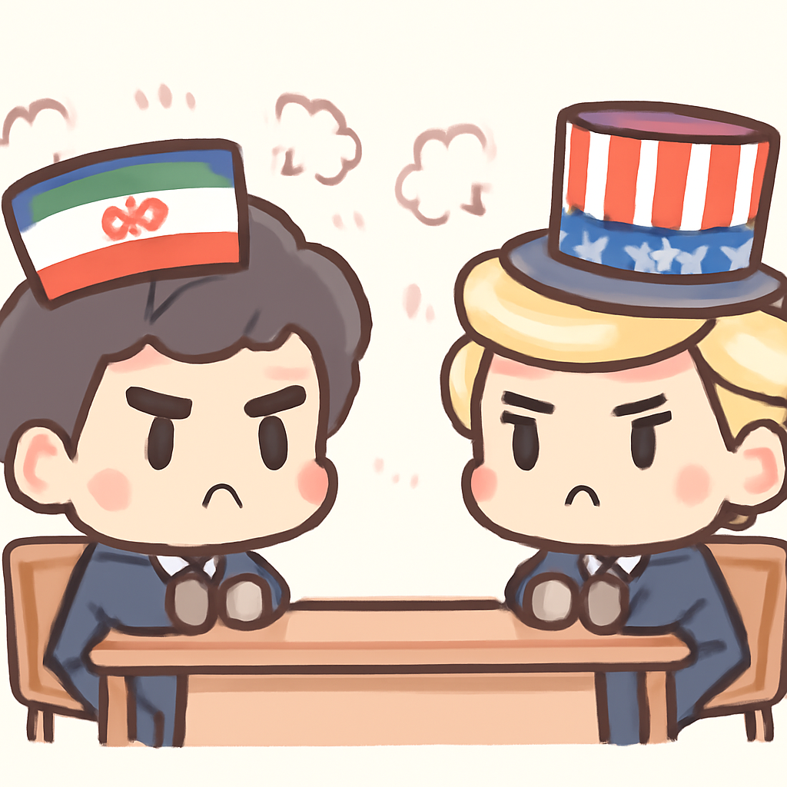

其一 · 以色列 · 撤銷對內塔尼亞胡的特赦決定
以色列總統決定不給內塔尼亞胡特赦

在以色列，總統赫茲戈決定不給總理內塔尼亞胡特赦，並希望尋求和解方案。這件事對以色列的政治未來有重大影響，因為內塔尼亞胡的貪污案仍在持續中，這可能會影響他的政治生涯。看來，總統也不想讓內塔尼亞胡的政治生涯就這樣隨便結束。
🔗 原始新聞 ↗
2026-04-27 · 以古觀今，以笑抗愁
以色列總統決定不給內塔尼亞胡特赦

在以色列，總統赫茲戈決定不給總理內塔尼亞胡特赦，並希望尋求和解方案。這件事對以色列的政治未來有重大影響，因為內塔尼亞胡的貪污案仍在持續中，這可能會影響他的政治生涯。看來，總統也不想讓內塔尼亞胡的政治生涯就這樣隨便結束。
🔗 原始新聞 ↗
馬利面臨激進分子的襲擊潮
在馬利，國防部長在一波激進分子的襲擊中不幸喪生，這些攻擊導致國內局勢愈發緊張。隨著恐怖主義的威脅上升，民眾的安全感直線下降，這讓當地的局勢更加複雜。希望馬利能找到解決的辦法，否則局勢只會像過期的牛奶一樣越來越糟。
🔗 原始新聞 ↗
墨西哥稱美國特工在境內不被允許行動
墨西哥當局確認，兩名美國特工在一場意外事故中喪生，據說他們並未獲得合法許可進行行動。這起事件讓人對國際間的情報合作與行動合法性產生疑問，未來可能會影響美墨之間的關係。希望他們的任務不是去找尋失踪的墨西哥辣椒。
🔗 原始新聞 ↗
查爾斯國王與特朗普的國事訪問即將展開
英國查爾斯國王與卡米拉王后將在星期一訪問美國，由特朗普主持。此次訪問包括花園派對和國會演講，將是兩國關係的重要時刻。這次的會面或許會成為未來英美關係的新里程碑，畢竟兩位領導人都不缺話題可聊。
🔗 原始新聞 ↗
伊朗與美國的關係進入僵局

伊朗與美國的緊張關係持續升溫，雙方在無法達成協議的情況下，似乎都在等待對方先退一步。這種“無戰無和平”的狀態，對中東地區的穩定構成威脅，未來可能引發更多的衝突。希望雙方能好好談談，而不是一直在那裡比誰更能忍耐。
🔗 原始新聞 ↗